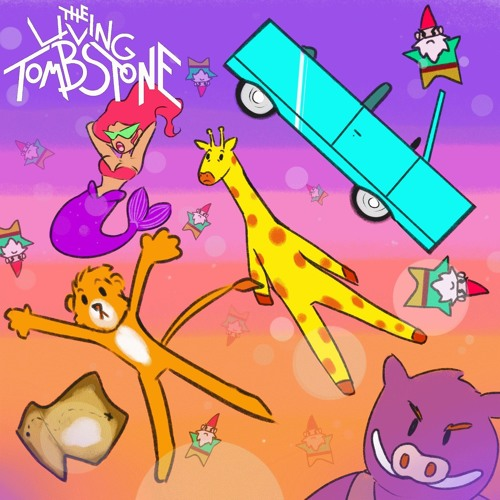

My Ordinary Life
Song by The Living Tombstone

Original Music Video
They tell me, "Keep it simple", I tell them, "Take it slow"
I feed and water an idea so I let it grow
I tell them, "Take it easy", they laugh and tell me, "No"
It's cool but I don't see them laughing at my money though
They spitting facts at me, I'm spitting tracks, catch me?
I'm spinning gold out my records, know you can't combat me
They tell me, "Jesus walks", I tell them, "Money talks"
Bling got me chill, 'cause I'm living in an icebox
They tell me I've been sleeping, I say, "I'm wide awake"
Tracks hot and ready so they call me Mister Easy-Bake
They say the grass is greener, I think my grass is dank
Drivin' with a drank on an empty tank to the bank
Do you feel me? Take a look inside my brain
The people always different but it always feels the same
That's the real me, pop the champagne
The haters wanna hurt me and I'm laughin' at the pain
Stayin' still, eyes closed
Let the world just pass me by
Pain pills, nice clothes
If I fall, I think I'll fly
Touch me, Midas
Make me part of your design
None to guide us
I feel fear for the very last time
They tell me that I'm special, I smile and shake my head
I'll give them stories to tell friends about the things I said
They tell me I'm so humble, I say, "I'm turning red"
They let me lie to them and don't feel like they've been misled
They give so much to me, I'm losing touch, get me?
Served on a silver platter, ask for seconds, they just let me
They tell me I'm a god, I'm lost in the facade
Six-feet off the ground at all times, I think I'm feeling odd
No matter what I make, they never see mistakes
Makin' so much bread, I don't care that they're just being fake
They tell me they're below me, I act like I'm above
The people blend together but I would be lost without their love
Can you heal me? Have I gained too much?
When you become untouchable, you're unable to touch
Is there a real me? Pop the champagne
It hurts me just to think and I don't do pain
Stayin' still, eyes closed
Let the world just pass me by
Pain pills, nice clothes
If I fall, I think I'll fly
Touch me, Midas
Make me part of your design
None to guide us
I feel fear for the very last time
Lay still, restless
Losing sleep while I lose my mind
All thrill, no stress
All my muses left behind (left behind)
World is below
So high up, I'm near-divine (I'm so high up)
Lean in, let go
I feel fear for the very last time